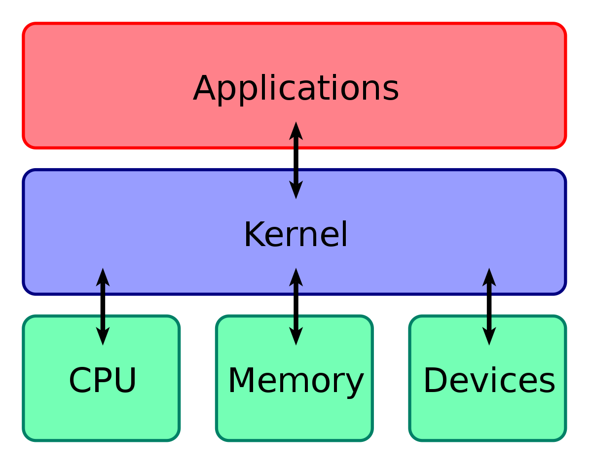
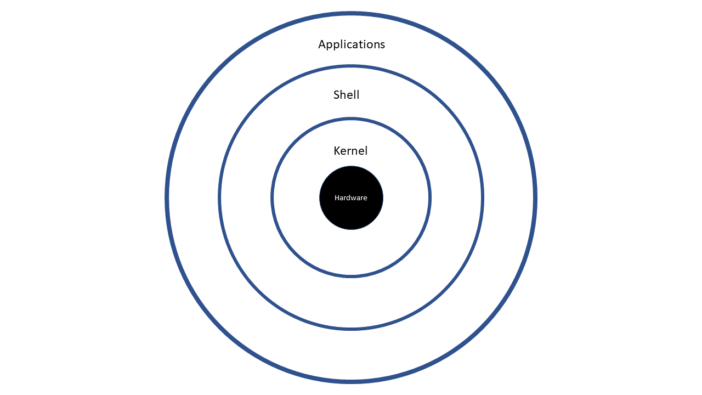

Linux Basic Terminology
Before you begin using Linux, you need to be aware of some basic terms such as kernel,
distribution, boot loader, service, filesystem, X Window system, desktop environment, and
command line. These are very commonly used by the Linux community.
- Kernel
- - The Kernel is considered the brain of the Linux operating system. It controls the hardware and makes the hardware interact with the applications. An example of a kernel is the Linux kernel. The most recent Linux kernel, along with past Linux kernels, can be found at the kernel.org web site.
- Distribution
- - A distribution also known as Distros is a collection of programs combined with the Linux kernel to make up a Linux-based operating system. Some common examples of a distribution are Red Hat Enterprise Linux, Fedora, Ubuntu, and Gentoo.
- Boot Loader
- - The boot loader, as the name implies, is a program that boots the operating system. Two examples of a boot loader are GRUB and ISOLINUX.
- Service
- - A service is a program that runs as a background process. Some examples of the service are httpd, nfsd, ntpd, ftpd and named.
- File System
- - A filesystem is a method for storing and organizing files in Linux. Some examples of filesystems are ext3, ext4, FAT, XFS and Btrfs.
- X Window System
- - The X Window System provides the standard toolkit and protocol to build graphical user interfaces on nearly all Linux systems.
- Desktop Environment
- - The desktop environment is a graphical user interface on top of the operating system. GNOME, KDE, Xfce and Fluxbox are some examples of the desktop environment.
- Command Line
- - The command line is an interface for typing commands on top of the operating system.
- Shell
- - The Shell is the command line interpreter that interprets the command line input and instructs the operating system to perform any necessary tasks and commands. For example, bash, tcsh and zsh.



